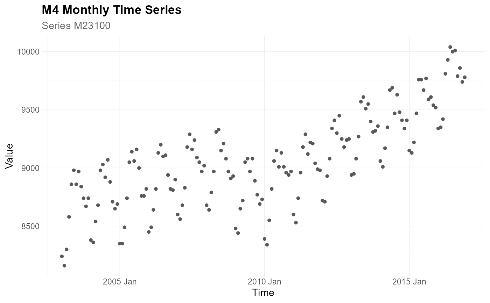
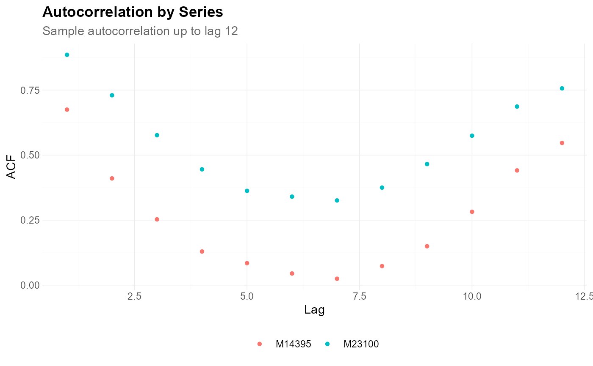

Create a scatterplot for two variables.
Usage
plot_point(
data,
x,
y,
facet_var = NULL,
facet_scale = "free",
facet_nrow = NULL,
facet_ncol = NULL,
color = NULL,
title = NULL,
subtitle = NULL,
xlab = NULL,
ylab = NULL,
caption = NULL,
point_size = 1.5,
point_type = 16,
point_color = "grey35",
point_alpha = 1,
theme_set = theme_tscv(),
theme_config = list(),
...
)Arguments
- data
A
data.frame,tibble, ortsibblein long format.- x
Unquoted column in
dataused on the x-axis.- y
Unquoted column in
datacontaining numeric values shown on the y-axis.- facet_var
Optional unquoted column in
dataused for faceting.- facet_scale
Character value defining facet axis scaling. Common values are
"free","fixed","free_x", and"free_y".- facet_nrow
Optional integer. Number of rows in the facet layout.
- facet_ncol
Optional integer. Number of columns in the facet layout.
- color
Optional unquoted column in
dataused to map point color.- title
Character value. Plot title.
- subtitle
Character value. Plot subtitle.
- xlab
Character value. Label for the x-axis.
- ylab
Character value. Label for the y-axis.
- caption
Character value. Plot caption.
- point_size
Numeric value defining the point size.
- point_type
Numeric or character value defining the point shape.
- point_color
Character value defining the point color. Ignored when
coloris supplied.- point_alpha
Numeric value between
0and1defining point transparency.- theme_set
A complete
ggplot2theme.- theme_config
A named
listwith additional arguments passed toggplot2::theme().- ...
Currently not used.
Details
plot_point() is a convenience wrapper around
ggplot2::geom_point(). It is useful for plotting relationships between
two variables, for example observed values over time, forecast errors by
horizon, or one numeric diagnostic against another.
The arguments x, y, facet_var, and color are
passed as unquoted column names.
If color is supplied, point colors are mapped to that variable and
point_color is ignored. If color is not supplied, all points are
drawn using point_color.
Additional theme settings can be supplied through theme_config. This
should be a named list of arguments passed to ggplot2::theme().
See also
Other data visualization:
plot_bar(),
plot_density(),
plot_histogram(),
plot_line(),
plot_qq()
Examples
library(dplyr)
data <- M4_monthly_data |>
filter(series == "M23100")
plot_point(
data = data,
x = index,
y = value,
title = "M4 Monthly Time Series",
subtitle = "Series M23100",
xlab = "Time",
ylab = "Value"
)

acf_data <- estimate_acf(
.data = M4_monthly_data |>
filter(series %in% c("M23100", "M14395")),
context = list(
series_id = "series",
value_id = "value",
index_id = "index"
),
lag_max = 12
)
plot_point(
data = acf_data,
x = lag,
y = value,
color = series,
title = "Autocorrelation by Series",
subtitle = "Sample autocorrelation up to lag 12",
xlab = "Lag",
ylab = "ACF"
)
